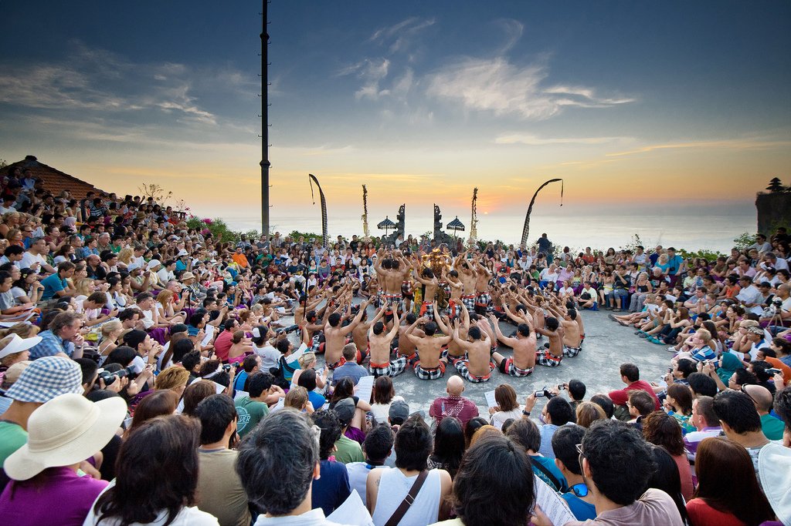
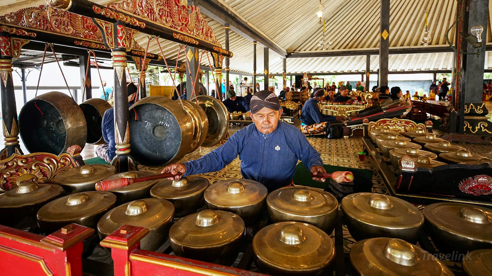
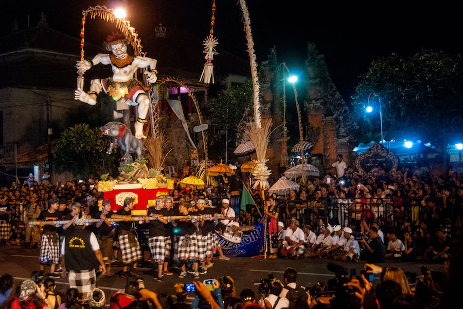

TARI KECAK.
Tari Kecak jadi salah satu tarian tradisional Bali yang populer dan menarik perhatian wisatawan. Tarian tradisional ini dilakukan oleh sekelompok pria yang kompak duduk melingkar sambil bersuara "cak" yang saling berirama.
Gamelan Bali.
Gamelan Bali adalah ansambel musik yang terdiri dari berbagai instrumen seperti gong, metallophone, drum, dan lain-lain.
Ogoh-ogoh Bali.
Ogoh-ogoh adalah patung raksasa yang terbuat dari bambu dan kertas yang digunakan dalam perayaan Nyepi di Bali.